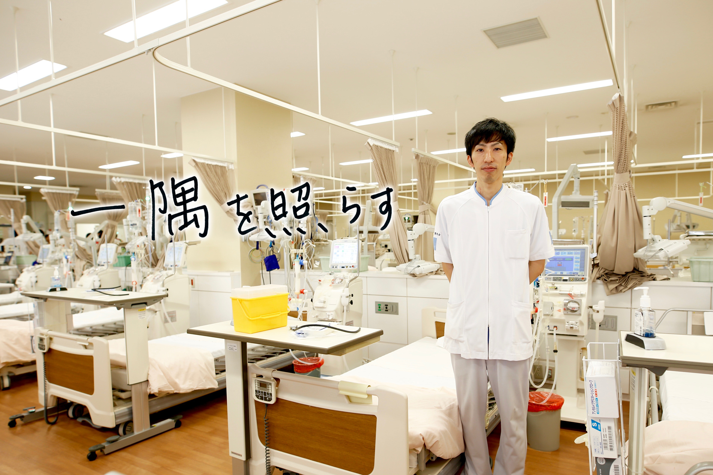

臨床工学技士
Clinical Engineer もどる
もどる

■小倉記念病院で叶えたい夢
『医療機器にあかるいジェネラリスト』を目指して
入職して虚血性心疾患治療や不整脈治療に携わり、数年前に不整脈治療専門臨床工学技士を取得し、現在は血液浄化部門で透析治療、アフェレシス治療に従事しています。各部門をまわって気付いたのは、循環器領域や血液浄化、呼吸器管理など仕事を分けて考えるのは意味がなく、すべての分野を学ぶことが臨床工学技士としての成長の鍵であることでした。もうひとつ重要なことは、あらゆる医療機器の管理、操作、知識を怠らず学ぶ事だと考えています。小倉記念病院では『循環』『浄化』『呼吸』それ以外にも多くの業務を経験できますので、それらを貪欲に学び、『医療機器にあかるいジェネラリスト』を目指していきたいと思います。
■入職希望者へのメッセージ
仕事もパパ業も充実した毎日が実現できています
小倉記念病院では、多くの経験が出来ます。それゆえ日常業務は専門性の高い業務が多く、努力と苦労という言葉は絶えずありますが、もっと勉強をしたい、成長したいという願望、達成感は満たされる病院です。また、学術研究などが盛んに行われており自己研鑽の場として環境の良い職場です。私自身も国内専門学会だけでなく国際学会での演題発表にも機会をいただき、臨床工学技士として貴重な体験をしてきました。仕事に学会発表、それであっても家庭との両立も可能です。私事ですが、仕事もパパ業も充実した毎日が実現できています。メリハリをつけて公私ともに充実した日々を一緒に送ってみませんか。
臨床工学技士の1日